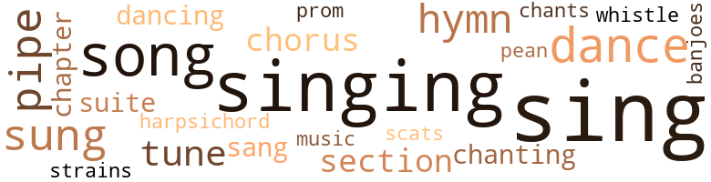

Madam President Elect, by Warner, Samuel Jonathan (1956)
104 music-related terms matched in this text.
Most frequent terms in this topic: sing (21); singing (16); song (9); sung (6); pipe (4)
banjo.n.01
Definition: a stringed instrument of the guitar family that has long neck and circular body
| word | sentence |
|---|---|
| banjoes | All the chores were done for the day , and the field slaves and stableboys had settled down for the evening 's frolic with homemade banjoes and reed flutes in front of Big Bill 's cabin . |
chant.n.01
Definition: a repetitive song in which as many syllables as necessary are assigned to a single tone
| word | sentence |
|---|---|
| chants | Lady Margaret was still sleeping , and there was an absence of the usual Sabbath evening singing and chanting down in the slave quarters where they had learned from Chloe that the Missus was sick , and the only noise heard were the low moaning chants of those praying for their Missus to get well . |
chapter.n.01
Definition: a subdivision of a written work; usually numbered and titled
| word | sentence |
|---|---|
| chapter | Sunday morning breakfast time in the Fortesque mansion was always the occasion for the reading of a chapter from the old family Bible by Lord Fortesque . |
| chapter | The family was very religious , and a fa - mous saying of Lord Fortesque 's was , ' Man sets the table , but God provides the food , ' " A chapter was read and then Lady Fortesque rang the bell for Leta and Mandy to bring in the food . |
chorus.n.01
Definition: any utterance produced simultaneously by a group
| word | sentence |
|---|---|
| chorus | Cars for miles back followed the family car all the way to the Bay Bridge , and the people in each town that they passed joined in the chorus of " Hurrah for Madam President . " |
| chorus | As had been arranged by Margaret , Dan threw aside the portieres just as the quartette began the chorus of the song for the final time . |
| chorus | The presence of the girls , now in full view , with their rich young voices filling every corner of the room , evidenced that the singers were actually living the chorus . |
dance.n.01
Definition: an artistic form of nonverbal communication
| word | sentence |
|---|---|
| dances | " Please forgive me , my dear sister-in-law , but that silly girl Leta going through the house chanting those weird tunes and doing those hoodoo dances puts me on the verge of jump - ing in the river . |
| dances | Often old Mammy would hobble on her conven - iently rheumatic legs to slowly turn out the first lamp , remembering how , when she was a young girl , she had cut quite a figure in the dances herself . |
| dance | He was about to pass the door of the cabin when he heard Leta say , " Please , Aunt Chloe , let me go to the dance tonight . " |
| dance | " No , yo ai n't gwine ter no dance ternight . |
| dance | She does n't want to go to the dance . " " ' |
| dance | " Now be a good girl and Aunt Chloe will let you go to the dance tomorrow night . " |
| dances | She sings and dances beautifully and is very intelligent . |
dance.v.02
Definition: move in a pattern; usually to musical accompaniment; do or perform a dance
| word | sentence |
|---|---|
| dancing | The earth around had been well packed by dancing feet , and Big Bill 's wife , Cindy , would serve molasses cakes and cider to the best dancers of the night . |
dance.v.03
Definition: skip, leap, or move up and down or sideways
| word | sentence |
|---|---|
| dancing | She goes through the house with much freedom and ease , singing , skipping and dancing just like any white girl who was born in upper circumstances . |
harpsichord.n.01
Definition: a clavier with strings that are plucked by plectra mounted on pivots
| word | sentence |
|---|---|
| harpsichord | Cynthia went into the parlor to practice on the harpsichord , while young Alfred hurried to the stables to look after the training of his hounds . |
hymn.n.01
Definition: a song of praise (to God or to a saint or to a nation)
| word | sentence |
|---|---|
| hymns | If they were not God-fearing men , their wives would usu - ally do the reading and would teach the slaves the hymns which were sung in those days . |
| hymns | They sang the songs and hymns Miss Cynthia taught me to play . |
| hymns | She had taught them many of their hymns . |
| hymn | It reminds me of the hymn that Aunt Rachel used to sing , ' Now Wash Me and I Shall Be Whiter Than Snow . |
| hymn | " All right , little angel , " said Rachel , " I wo n't cry eny mo. " Then she began to sing the old hymn , " Happy Day When Jesus Washed Away My Sins . " |
music.n.01
Definition: an artistic form of auditory communication incorporating instrumental or vocal tones in a structured and continuous manner
| word | sentence |
|---|---|
| music | " Leta , it is quite evident that Margaret and Cynthia have a natu - ral appreciation for music , " said Mr. Ed . |
paean.n.02
Definition: (ancient Greece) a hymn of praise (especially one sung in ancient Greece to invoke or thank a deity)
| word | sentence |
|---|---|
| pean | I heard Lord Chausin telling Father one day , that , after all , no Euro - pean can really trace his ancestry back to a pure Caucasian origin , since there have been so many races dominating civilizations in the past . " |
pipe.n.04
Definition: a tubular wind instrument
| word | sentence |
|---|---|
| pipe | Lord Fortesque lit his pipe , took a few puffs , then said , " No , no , my good man , I trust it may not increase to any serious extent on the Eastern Shore here , although it has already increased tremen - dously on the Western Shore of this state and in Virginia . |
| pipes | Lord Chausin and Lord Fortesque followed , lighting their pipes . |
| pipes | The house servants were sitting be - hind the Big House 's kitchen , smoking pipes and sleeping in cast-off chairs or benches . |
| pipe | Leta was coming out on the porch with Lord Fortesque 's meerschaum pipe that he had asked her to bring . |
| pipe | Leta screamed and let the pipe fall from her hand and went dashing toward the gate screaming , " Mr. Henry , oh , Mr. Henry . |
| pipe | Nodding to Henry at the same time , he asked him to give him his pipe which was lying on the table near him . |
promenade.n.01
Definition: a formal ball held for a school class toward the end of the academic year
| word | sentence |
|---|---|
| prom | " Cynthia , I love you so much that if I ever have a little girl I am going to name her after you , and prom - ise ' me if you have a little girl you will name her after me . " |
scat.n.01
Definition: singing jazz; the singer substitutes nonsense syllables for the words of the song and tries to sound like a musical instrument
| word | sentence |
|---|---|
| scats | The others merely nodded to her as she very graciously offered them scats . |
section.n.01
Definition: a self-contained part of a larger composition (written or musical)
| word | sentence |
|---|---|
| section | Lord Fortesque enjoyed prosperity for several years as a tradesman , but politically he was not welcomed to any great extent by the in - habitants of this section of the Eastern Shore of Maryland because of his pro-British feelings . |
| section | You know this section is known as the garden spot of the world , " he retorted laughingly . |
| section | Lady Fortesque secured a cozy little apartment of four rooms on the upper floor of a converted dwelling just off from the business section of the city . |
sing.v.02
Definition: produce tones with the voice
| word | sentence |
|---|---|
| sung | If they were not God-fearing men , their wives would usu - ally do the reading and would teach the slaves the hymns which were sung in those days . |
| sing | When - ever I hear her sing and when I tease or jest with her , I feel that fascination gripping me tighter and tighter . |
| sing | Cynthia has taught her to sew , sing and to play the harp . |
| sings | Did you hear how well she sings ? " |
| sing | She sho was purty and she cud sing , Lawsy me , jest lak a mockin bird . |
| singing | It was a beautiful Easter Sunday morning in the month of April ; the birds were singing cheerfully in every tree . |
| sings | She sings and dances beautifully and is very intelligent . |
| sing | " Now be a good girl and do n't sing too loudly in the back of the church . " |
| sang | " And , Mother , " said Cynthia quite excitedly , " Leta was the best dressed girl of any of the servants in the rear of the church , and oh , Mother , how she sang . " |
| sang | They sang the songs and hymns Miss Cynthia taught me to play . |
| sing | Cynthia 's part - ing words to Leta were , " Remember , Leta , I want you to sing your favorite piece today as you have never sung it before , to give me courage . " |
| sung | Cynthia 's part - ing words to Leta were , " Remember , Leta , I want you to sing your favorite piece today as you have never sung it before , to give me courage . " |
| sing | " Do n't worry , Cynthia , I feel so happy I could sing it to the whole world and not be afraid any more . " |
| sing | She was just on the verge of dashing away from the company when Cynthia looked towards her and said , " Leta , you must sing your favorite song for me . " |
| sing | Lord Chausin , coming into the dining room from the library where he had been enjoying a few drinks with the other male guests , heard Cynthia ask Leta to sing . |
| sing | " Yes , yes , Leta , you must sing ' Drink to Me Only with Thine Eyes . ' |
| sing | Much credit for her wonderful voice is due to Cynthia , who taught her to sing and play the harp also . |
| sing | Many of you no doubt have heard her sing in the church on the Sabbath with the congregation , but to hear the real soulful beauty of her voice , you must hear it as a solo . " |
| sing | Quickly looking toward Cynthia , she stood erect with clasped hands and said , " I 'll sing for you with all my heart , " and she smiled toward the harpist to begin . |
| Sing | " Sing it again , Leta , " said Cynthia , who was now leaning heav - ily on her husband 's arm with tears streaming down her cheeks . |
| sing | Leta began to sing the next verse , but by the time she was about half through , seeing Cynthia 's tears and the handkerchiefs dabbing the eyes of the others was too much for her . |
| sung | Softly and harmoniously were heard the strains of " Lead , Kindly Light , " sung by the quartette . |
| sing | It reminds me of the hymn that Aunt Rachel used to sing , ' Now Wash Me and I Shall Be Whiter Than Snow . |
| sung | ' Drink to Me Only with Thine Eyes ' was sung by a quartette of Negro girls from the Douglas High School . |
| sing | " All right , little angel , " said Rachel , " I wo n't cry eny mo. " Then she began to sing the old hymn , " Happy Day When Jesus Washed Away My Sins . " |
| sing | She was expecting a call from her sister Margaret , who had gone to the Douglas High School to make arrangements to have the quartette of Negro girls come and sing " Drink to Me Only with Thine Eyes " at the wedding . |
| sing | What I mean is that the quartette of girls from the Douglas High School will be here tonight to sing my grandfather 's favorite piece . " |
| sing | As she began to sing the words of the song , Rachel turned around and said , " Honey chile , what dat yo singin ' ? |
| sing | Rachel stopped greasing the pans for a moment and said , " Doan yo know , honey chile , my mammy tole me der neber was enybody in dis state of Marylan ' dat could sing dat piece lak yo great-grandmammy cud when she war a young girl . |
| sing | This very instant , hardly before the last word had left his lips , the quartette , now standing behind the portieres just outside the living room , had begun to sing the first stanza of " Drink to Me Only with Thine Eyes " . |
| sung | The suddenness of the sound of these voices coming through the portieres held everyone in the room motionless until the second verse had been sung . |
| sing | How you wanted to have the Prayer Band come and sing for Mother the night of the wedding , and how Uncle Dan said no , the neighbors might think we were having a wake ? |
singing.n.01
Definition: the act of singing vocal music
| word | sentence |
|---|---|
| singing | Just as he was about to take leave of Lady Fortesque , they heard the voice of Lcta coining out of the house servants ' quarters singing lightheart - edly . |
| singing | It was this sort of moonlit evening that Henry Fortesque , becoming bored and restless with the festivities of the Big House , decided to saunter down by the cabin of Big Bill and see the slave folk dances and hear the singing . |
| singing | As he neared the cabin , the noise of the singing and dancing became louder . |
| singing | And she is forever singing and dancing lightheartedly through the house . |
| singing | Afterward she began to sweep the room and the hallway , singing and humming all the while . |
| singing | " Quite true , but you forgot to mention the singing , " said Lord Hasbrook . |
| singing | The slaves had just begun to come back to their cabins from the singing and prayer meeting in the pine woods on the far end of the plantation . |
| singing | Chloe was preparing the breakfast in the kitchen , and Leta had the cabin of Aunt Chloe and Uncle Ezra beside the Big House shaking with the sound of her high-pitched soprano voice singing . |
| singing | " Well , Leta , my child , did you like the singing this morning ? " |
| singing | Lady Margaret was still sleeping , and there was an absence of the usual Sabbath evening singing and chanting down in the slave quarters where they had learned from Chloe that the Missus was sick , and the only noise heard were the low moaning chants of those praying for their Missus to get well . |
| singing | I have been tormented and tortured , seemingly a lifetime , by Leta 's beauty , her carefree disposition , her voice , her singing , her . . . love for me , her . . . her . |
| singing | Soon after they were singing and dancing and making merry in their own way . |
| singing | The birds were singing ; there were large green lawns and a beautiful winding river that flowed by a great big old-fashioned colonial house . |
| singing | Wednesday morning was just an ordinary morning in the Presi - dent-Elect 's household except for the occasional crying and singing of Rachel , who was busying herself in the kitchen baking a three - layer , white-iced wedding cake . |
| singing | First , the reunion of our family and friends , next the singing of that selection by the quar - tette , and then this beautifully arranged wedding reception by the children , Aunt Rachel and Uncle Dan . |
song.n.01
Definition: a short musical composition with words
| word | sentence |
|---|---|
| songs | They sang the songs and hymns Miss Cynthia taught me to play . |
| songs | The three fiddlers and the harpist had seated themselves under a large oak tree which stood in the center of the lawn , and already were playing waltz tunes and other popular songs . |
| song | She was just on the verge of dashing away from the company when Cynthia looked towards her and said , " Leta , you must sing your favorite song for me . " |
| song | As she reached the middle of her song , her clear soprano voice arose to its fullest strength , then gradually fell to almost a whisper as she reached the final bars . |
| song | " Yes , it is strange how that song impressed the children , " she an - swered thoughtfully . |
| song | " Father told me that it was my grandmother 's favorite song , and that it always brought back memories of his mother whenever he heard it . |
| song | Does n't it seem strange that the same song impressed Cynthia tonight ? " |
| song | Cynthia began to hum the tune of the song as she busily folded the paper napkins . |
| song | As she began to sing the words of the song , Rachel turned around and said , " Honey chile , what dat yo singin ' ? |
| song | As had been arranged by Margaret , Dan threw aside the portieres just as the quartette began the chorus of the song for the final time . |
| song | The memory of the song 's having been the favorite of her father and grandmother was too much for her . |
suite.n.01
Definition: a musical composition of several movements only loosely connected
| word | sentence |
|---|---|
| suite | He was ushered into the private suite of his wife . |
| suite | After the completion of her speech of thanks , the surging crowd turned itself loose upon the platform from which Madam President - Elect had a moment before been ushered away by stalwart police - men to her private suite next door to the armory . |
tone.v.01
Definition: utter monotonously and repetitively and rhythmically
| word | sentence |
|---|---|
| chanting | " Please forgive me , my dear sister-in-law , but that silly girl Leta going through the house chanting those weird tunes and doing those hoodoo dances puts me on the verge of jump - ing in the river . |
| chanting | Lady Margaret was still sleeping , and there was an absence of the usual Sabbath evening singing and chanting down in the slave quarters where they had learned from Chloe that the Missus was sick , and the only noise heard were the low moaning chants of those praying for their Missus to get well . |
tune.n.01
Definition: a succession of notes forming a distinctive sequence
| word | sentence |
|---|---|
| tunes | " Please forgive me , my dear sister-in-law , but that silly girl Leta going through the house chanting those weird tunes and doing those hoodoo dances puts me on the verge of jump - ing in the river . |
| tune | You can never tell when some of the servants or our children might just happen to approach in time to hear an inoppor - tune word in regard to this matter concerning Henry . " |
| tunes | The three fiddlers and the harpist had seated themselves under a large oak tree which stood in the center of the lawn , and already were playing waltz tunes and other popular songs . |
| strains | As the minister finished saying the words , " I now pronounce you man and wife , " the first strains of the ballad would come drift - ing softly into the living room . |
| tune | Cynthia began to hum the tune of the song as she busily folded the paper napkins . |
whistle.v.01
Definition: make whistling sounds
| word | sentence |
|---|---|
| whistle | " Well , you see , my dear , being the President of the United States , as long as you will be kissing the babies and the men , ahem , " he said , laughing , " it will be for the better ; but when you do n't put everyone from every little whistle stop into some important office , then it will be for the worse for you . " |
whistle.v.05
Definition: make a whining, ringing, or whistling sound
| word | sentence |
|---|---|
| sung | En yo grandfatha , he sung it all de time . " |
167 violence-related terms matched in this text.
Most frequent terms in this topic: jealousy (8); anger (7); hurt (7); fight (7); kill (6)
abhor.v.01
Definition: find repugnant
| word | sentence |
|---|---|
| abhors | They will vote for the candidate who abhors wrong and who upholds the right regardless of his party affiliations . |
anger.n.01
Definition: a strong emotion; a feeling that is oriented toward some real or supposed grievance
| word | sentence |
|---|---|
| anger | After much muttering and squirming , he finally opened his eyes and beheld his sister-in-law looking perplexed and with a little anger showing on her knitted brows . |
| anger | " Margaret , " said Henry , and for a moment you could almost detect anger in his tone of voice . |
| anger | " Git away from Marse Henry wid yo fresh self , " said Aunt Chloe , with anger in her voice . |
| anger | Lord Fortesque was by now actually letting tears flow from his eyes , either from anger or pity for the helpless form cring - ing before him . |
| anger | Cynthia swallowed hard and turned her head to one side so as not to let the seamstress see the anger and hurt on her face . |
| anger | Stamping her foot in anger , Cynthia said , " Mollie Perkins , do n't you dare say those things to me again . |
| anger | The steamstress , seeing the anger in Cynthia 's eyes , quickly said , " Oh , forgive me , Miss Cynthia , I was only telling what I had heard . " |
assassinate.v.01
Definition: murder; especially of socially prominent persons
| word | sentence |
|---|---|
| assassinated | I lay awake most of the night thinking about how the Presidents Garfield and McKinley were assassinated by radical men . " |
| assassinated | " Well , this morning Cynthia awakened me by telling me that she lay awake all night thinking about how Garfield , McKinley and Lincoln were assassinated by radicals . |
battle.v.01
Definition: battle or contend against in or as if in a battle
| word | sentence |
|---|---|
| battled | For weeks he had battled within himself just how he could tell poor Leta this terrible news . |
bloodshed.n.01
Definition: the shedding of blood resulting in murder
| word | sentence |
|---|---|
| bloodshed | This is a new day that has dawned upon America , a day that has been born out of the bloodshed of two devastating and cruel wars , where white supremacy has met white supremacy on the field of battle , aided by the so-called black inferiority under the British flag and the Stars and Stripes of the United States . |
butcher.v.01
Definition: kill (animals) usually for food consumption
| word | sentence |
|---|---|
| slaughtered | The cost to you of send - ing such a seemingly large delegation to foreign lands to show the real American way of life is nothing compared with the cost of sending millions of our husbands , sons , and brothers over there to be slaughtered just to show off American might in a war . |
character_assassination.n.01
Definition: an attack intended to ruin someone's reputation
| word | sentence |
|---|---|
| assassination | The passing of their faithful servants and the near assassination of the President-Elect did not cast as much gloom over the Walters family as did the news to their daughters of the family 's beginning . |
contemn.v.01
Definition: look down on with disdain
| word | sentence |
|---|---|
| scorned | We arc in love with each other . . . why should she be scorned and looked down upon just on account of her having black blood in her veins ? |
covetousness.n.01
Definition: an envious eagerness to possess something
| word | sentence |
|---|---|
| covetousness | Remember , I am young and healthy and covetousness is in my bones . |
crucify.v.01
Definition: kill by nailing onto a cross
| word | sentence |
|---|---|
| Crucify | I know the rabble-rousers will cry , ' Crucify them , ' as we stand in judgment before the public . |
defy.v.01
Definition: resist or confront with resistance
| word | sentence |
|---|---|
| withstand | Do you think Henry could withstand her uncontrolled advances toward him ? |
| withstand | It would be impossible for you and Uncle Henry to marry and live here and withstand the gossipers , but , with your complexion and features , you and Uncle Henry could go to Bal - timore to live and no one would ever know that there was any racial difference between you . " |
desecrate.v.01
Definition: violate the sacred character of a place or language
| word | sentence |
|---|---|
| profane | Why do humans profane the holy word ? |
draw.v.23
Definition: pull (a person) apart with four horses tied to his extremities, so as to execute him
| word | sentence |
|---|---|
| drew | She drew up beside him as a little child would snuggle up to its mother for protection . |
eliminate.v.03
Definition: kill in large numbers
| word | sentence |
|---|---|
| annihilating | The shadows of a vast annihilating atomic war is hovering over our heads . |
| annihilating | How foolish of me to nourish such self - annihilating thoughts . " |
| eradicated | " There have been many evils plaguing this country of ours , evils which must be eradicated . |
| eradicated | Had world society eradicated classes , prejudices and segregations years ago , and had they taught the true principles of democracy to all religious and racial groups , we would not be threatened today with the inevitable religious and racial war that is dawning on the horizon of the universe . |
| eradicate | She had , since her early girl - hood , tried to find a way to eradicate this dark blot on the white garments of this great democracy . |
envy.n.01
Definition: a feeling of grudging admiration and desire to have something that is possessed by another
| word | sentence |
|---|---|
| enviousness | " That is quite right , and true to the extent that we all strive to live as best we can , but it does n't mean that , as we strive to attain what we feel is necessary to help us live as we wish , we let our attaining these things hamper or cause enviousness or jealousy and embarrassment to the less fortunate . |
erase.v.01
Definition: remove from memory or existence
| word | sentence |
|---|---|
| erased | The night was so pleasant and the walk sort of erased the high emotional feelings caused by an exceptional rendition . |
fight.n.02
Definition: the act of fighting; any contest or struggle
| word | sentence |
|---|---|
| fighting | So successful was the mission in foreign lands that several small countries who were warring with each other over trivialities , ceased fighting and began to work and play and improve their home life . |
fight.n.05
Definition: a boxing or wrestling match
| word | sentence |
|---|---|
| fight | It finally led to a fist fight between Lord Alfred and his overseer . |
| fight | " They told how a neighboring plantation owner 's son , who ad - mired your grandmother also , had a fight with your grandfather the night of Cynthia 's wedding ; and later he shot him . |
fight.v.02
Definition: fight against or resist strongly
| word | sentence |
|---|---|
| defending | She was defending without fees a pushcart peddler of foreign birth who was accused of selling without a license . |
| fights | He who fights with the sword perishes by the sword . " |
| fight | Suppose your big brother had to fight and probably got killed , then you would feel sad ; you would hate the sight of a uniform because it would mean that it was the cause of your losing someone dear to you . " |
| fight | " Oh , well then , " said Cynthia , stamping her foot , " maybe when Mother becomes President she could make you her Naval Aide and you wo n't have to fight . " |
| fighting | They realized that life meant more than to be fighting one another . |
| fight | You have no reserve , no will to rise up and fight the visible or invisible enemies of your mind . |
| fought | I fought hard tonight not to let my sexual impulses get the better of me . |
| fight | Who was encouraging her to stand up and fight this battle of supposed inequality of color to a satisfactory conclusion . |
| defending | Before Alfred could speak , Mr. Walters , with upraised arm said , " By all high heaven , if by protecting and defending your mother and you chil - dren , and even the good names of your great-grandparents , in their beliefs that the God-given privilege of marrying and having offspring was their right , if I commit a sin , then let it be upon me . |
| fought | As you know , I fought opponents all the way up the political ladder from a County Leader to the State Legislature , then to Congress as United States Senator , but never have I faced a greater opponent than my own conscience . |
| fighting | Remember your moth - er 's fighting spirit , " said Mr. Walters , as Alfred began to daub his tear-moistened eyes with his handkerchief . |
| fought | There had been numerous aspersions cast upon her , such as " nigger-lover , " " nigger - baiter " and " high yellow , " but she staunchly fought all the harder for the minorities which she believed , under the Constitution , were entitled to have all the rights and privileges that this country offers . |
| fight | A woman could not fight so hard for the rights of the Negro unless she were a Negro herself . |
| fought | My great-grandfather fought in the Revolutionary War , my grandfather fought in the Civil War , my father fought in the War with Spain , I was in World War I , and now my son was in World War II . |
| fought | My great-grandfather fought in the Revolutionary War , my grandfather fought in the Civil War , my father fought in the War with Spain , I was in World War I , and now my son was in World War II . |
| fought | My great-grandfather fought in the Revolutionary War , my grandfather fought in the Civil War , my father fought in the War with Spain , I was in World War I , and now my son was in World War II . |
fury.n.01
Definition: a feeling of intense anger
| word | sentence |
|---|---|
| fury | My fury knew no bounds . |
| fury | Perhaps some ill wind took you up as a virgin seed , and when its fury was spent dropped you among these green blades of grass , so foreign to your colors of white and yellow . |
| rage | He thought also . . . suppose Little Bill in a jealous rage might forget that his brother was a white man , and think of him only as a rival for Leta 's affections and that he stood between them . |
| rage | With a sudden burst of rage , he caught hold of his friend 's arm and said , " Hasbrook , you talk like a damn fool . |
gag.v.06
Definition: cause to retch or choke
| word | sentence |
|---|---|
| choke | I could choke them . " |
| choked | Leta was too choked to say a word , but , turning her face away from those on the porch , she walked slowly toward Aunt Chloe 's cabin . |
| choked | He viciously choked him until his body fell limp to the ground . |
| choked | He ai n't been shot , he been choked ter death . " |
| choked | That scoundrel , Tom Handy 's son , was choked to death . |
| choked | My brother was not strong enough to have choked him and with a ball through his heart too . |
| choking | Although Lord and Lady Fortesque suspected a secret jealousy ex - isted in the mind of Bill 's son , they finally concluded that the boy had tried to save Henry 's life by choking young Handy and then became frightened and ran away . |
| choked | Afore he could lode de pis - tol ter shoot brotha , mah brotha he grabbed him en choked him til he didn move . |
| choking | The brother saved his life by seizing the fellow and choking him to death . |
| choke | He unhesitat - ingly and savagely grabbed the man by the throat and began to choke him . |
| choking | He placed his arms around them and said in a choking voice , " My dear little girls , I have followed your lives ever since you were infants . |
grapeshot.n.01
Definition: a cluster of small projectiles fired together from a cannon to produce a hail of shot
| word | sentence |
|---|---|
| grape | I was standing by the grape arbor with Henry and I asked her what she had done . |
gun.n.01
Definition: a weapon that discharges a missile at high velocity (especially from a metal tube or barrel)
| word | sentence |
|---|---|
| guns | I see things your way ; guns , tanks , battleships and aircraft - what do they stand for ? |
| gun | " Let go of that gun or I 'll blow your brains out . |
| gun | With the gun still pointed at the man 's head , he quickly glanced toward his wife and said in a very excited voice , " Dear , dear . . . are you hurt ? " |
| gun | Know - ing Mrs. Walters and her family as neighbors , and seeing the gun in Mr. Walters ' hand and the shabbily dressed man with his hands raised in the air , he quickly sized up the situation . |
| gun | " I was just thinking what an undeserved fate it would have been if those two wonderful girls had been robbed of their mother 's love and guidance by that crank 's gun , " remarked Mr. Walters . |
harm.v.01
Definition: cause or do harm to
| word | sentence |
|---|---|
| harm | He might even resent you telling Big Bill and try to harm you . " |
hassle.n.02
Definition: disorderly fighting
| word | sentence |
|---|---|
| tussle | The man jerked violently from the officers ' grasp and put up such a tussle that two other officers joined the first in subduing him . |
hate.n.01
Definition: the emotion of intense dislike; a feeling of dislike so strong that it demands action
| word | sentence |
|---|---|
| hatred | The barriers of race prejudice and color hatred will finally be broken down either by a bloody battle royal between the leading contenders - the yellow , the black and the white races - or by the better way of a universal brotherhood brought about by a great spiritual Christian revolution among all the different races and colors of mankind , thinking the one thought that we are each other 's brother and keeper . " |
| hatred | This condition caused jealousy and hatred to spring up between the mothers of the black children and those of mixed blood children . |
| hatred | Wars , destruction of human beings , suffering and poverty ; and still we have hatred in the world because the rights and privileges of the conquered people are suppressed by their conquerors . |
| hatred | She thought to herself : If this uneducated woman ( who had only learned from hearsay ) can so simplify things , then why ca n't more intelligent and educated people in this great country of ours agree to a similar plan for the eradication of class hatred and racial discrimination ? |
| hate | How will you feel hidden away in some place with a half-white wife , rearing half-white children who will be sneered at by other white children , and , on the other hand , victimized by the jealousy and hate of black children ? |
| hate | Lawdy me , chile , I ' se hate ter say so , but yo looks purty . |
| hate | " Lawdy sakes , Miss Margret , I ' se certly hate ter see poor lil Leta leave me , " said Chloe , wiping the tears . |
| hatreds | We will not allow this country to destroy itself by rotting from the inside with segrega - tion , religious hatreds , and crooked politics . |
hate.v.01
Definition: dislike intensely; feel antipathy or aversion towards
| word | sentence |
|---|---|
| hate | Suppose your big brother had to fight and probably got killed , then you would feel sad ; you would hate the sight of a uniform because it would mean that it was the cause of your losing someone dear to you . " |
| hated | I really hated to get married and leave poor Leta here . |
| hating | As for me , your brother , I would have gone down to my grave hating and cursing you for having flung the proud name of Fortesque into the cesspool of dishonor and disgrace . " |
| hate | " Very well , but I hate to attract all the excitement and publicity that accompanies the presence of the police . " |
| hates | She trusts everyone and hates undue publicity . " |
| hate | I hate to think of what a black smudge will then he drawn across the word ' democracy , ' not only in this country , but around the entire world . |
hostility.n.02
Definition: a state of deep-seated ill-will
| word | sentence |
|---|---|
| enmity | No doubt all these things have made her feel superior to the blacks here , and it has caused enmity to be shown both to Cynthia and Leta whenever they go to the village or church . |
| enmity | There was quite a bit of enmity in his voice and also in the manner in which he dashed away and hid in the shadows of the trees . |
indignation.n.01
Definition: a feeling of righteous anger
| word | sentence |
|---|---|
| indignation | Lady Fortesque arose to her feet in indignation at such a farce being enacted by such hypocrites and said , " We will let them marry in a decent and respectable manner as though they were both of the same color and blood . |
injury.n.01
Definition: any physical damage to the body caused by violence or accident or fracture etc.
| word | sentence |
|---|---|
| hurt | She remembered the hurt look on Lady Fortesque 's face this morning when she told her she had seen Henry alone . |
| harm | I have been watching all along to see that no harm came to Leta through this unchaperoned romance . |
| harm | He might do Henry bodily harm . |
| hurt | Cynthia swallowed hard and turned her head to one side so as not to let the seamstress see the anger and hurt on her face . |
| hurt | Cynthia , her husband and her brother Alfred were asking was their uncle hurt . |
| harm | " Oh , I do n't see how anyone would want to do harm to Mother . |
jealousy.n.01
Definition: a feeling of jealous envy (especially of a rival)
| word | sentence |
|---|---|
| jealousy | This condition caused jealousy and hatred to spring up between the mothers of the black children and those of mixed blood children . |
| jealousies | Lady Fortesque foresaw the hidden jealousies that would some day arise between whites and slaves by reason of this new race of humans being unfairly transplanted on many planta - tions . |
| jealousy | I presume this situation is the cause of much hidden jealousy between the black boys and the whites . " |
| jealousy | Do you know there is much rivalry and petty jealousy among the plantation owners as to how their house servants dress and how they look whenever they go to church in the village with their mistresses . " |
| jealousy | And this causes jealousy , snobbishness between those who are fortunate enough to have and those who do not have these necessary things to place them in seemingly exalted positions in the social setup . " |
| jealousy | " That is quite right , and true to the extent that we all strive to live as best we can , but it does n't mean that , as we strive to attain what we feel is necessary to help us live as we wish , we let our attaining these things hamper or cause enviousness or jealousy and embarrassment to the less fortunate . |
| jealousy | " May I add to it , " said cousin John , " by saying that there is a great amount of jealousy exhibited among these mulattoes and near whites and blacks in Jamaica and Haiti . |
| jealousy | How will you feel hidden away in some place with a half-white wife , rearing half-white children who will be sneered at by other white children , and , on the other hand , victimized by the jealousy and hate of black children ? |
| jealousy | Although Lord and Lady Fortesque suspected a secret jealousy ex - isted in the mind of Bill 's son , they finally concluded that the boy had tried to save Henry 's life by choking young Handy and then became frightened and ran away . |
kill.v.10
Definition: cause the death of, without intention
| word | sentence |
|---|---|
| kill | ... I could kill the man who was her father and caused her all this trouble . " |
| killed | Rumor had it that he either died of tropical fever or was killed by the natives . " |
| killing | On two occasions , to my knowledge , there have been hangings of black boys ; one was a boy who had strangled a mulatto girl to death and the other slave boy was hanged for killing his master 's son who was caught in the stable with a quadroon girl . |
| killed | Suppose your big brother had to fight and probably got killed , then you would feel sad ; you would hate the sight of a uniform because it would mean that it was the cause of your losing someone dear to you . " |
| kill | I would just kill myself if I ever found out that he had gone . |
| kill | She is desperately in love with Henry , and she told me she would kill herself if he goes away . |
| kill | I knew Leta would kill herself if I left here and did n't take her with me , and . . . and besides -- " Henry began to shake in his brother 's grasp as he tried desperately to find the words to express himself . |
| kill | " No . . . no , Big Bill , do n't kill him . |
| killed | Everybody thought he 'd killed Massa Henry . " |
| kill | And , besides , one thing she promised in her campaign speech was that mothers ' sons will never again be sent to war in foreign lands to kill and deprive other mothers of their sons and children of their fathers and thus cause poverty and suffer - ing to wreck the lives of millions of innocent people . |
knife.n.02
Definition: a weapon with a handle and blade with a sharp point
| word | sentence |
|---|---|
| knife | Leta hurriedly placed the last knife and fork beside its plate and said to Aunt Chloe , " Must I ring the bell for them now ? " |
| knife | She reached between the couple and picked up the cake knife . |
| knife | " Miss Leta and Mr. Ed , will yo place yo hands on dis knife . " |
| knife | The wedded couple having done so , Rachel then lifted the knife with their three hands touching the top of the cake ; then pressed down , and the first cut was made . |
martyr.v.01
Definition: kill as a martyr
| word | sentence |
|---|---|
| martyred | If our fam - ily is to be martyred for the cause of miscegenation of the races in this country and other countries where it is frowned upon , then let it be our lot . |
mugging.n.01
Definition: assault with intent to rob
| word | sentence |
|---|---|
| mugging | Continuing , the Senator said , " My friends up North tell me that most of the Negroes who leave the South and come up North are causing plenty of embarrassment to the northern Negroes by their shiftlessness , stealing , mugging and unsanitary ways of living . |
murder.n.01
Definition: unlawful premeditated killing of a human being by a human being
| word | sentence |
|---|---|
| murder | Reaching the scene of the murder , Lord Fortesque heard one of the farm hands say , "' Tis Marse Handy 's son . |
| murder | The constable searched the countryside and also the ad - joining towns for Big Bill 's boy , as he was of the opinion that the boy was guilty of the double murder and robbery of the watch . |
| murder | " Any - thing is better than telling her of this dastardly murder . " |
musket_ball.n.01
Definition: a solid projectile that is shot by a musket
| word | sentence |
|---|---|
| ball | Just as Lord Hasbrook and Henry turned to go , a pistol shot rang out and a ball whizzed dangerously close to Henry 's head . |
| ball | Then a pistol shot rent the air and Henry sank to the ground mortally wounded , the ball hav - ing pierced his heart . |
| ball | Big Bill 's boy sat all the while during the scuffle dumbfounded , but when he beheld the pitiful and helpless condition of the man he considered his rival , he sprang from the buggy just as the trigger snapped and a ball just grazed his shoulder . |
| ball | My brother was not strong enough to have choked him and with a ball through his heart too . |
pain.v.02
Definition: cause emotional anguish or make miserable
| word | sentence |
|---|---|
| hurt | " I doan unnerstand bout no ciplinary pogram , but I jest ca n't hurt dis lil angel 's feelin 's . " |
| hurt | I wo n't hurt you . |
| hurt | Hearing the commotion in the hallway , he rushed out in time to see the policemen carry the man out bodily , while the little girl was following after them frantically crying , " Do n't hurt my daddy , do n't hurt my daddy . " |
| hurt | Hearing the commotion in the hallway , he rushed out in time to see the policemen carry the man out bodily , while the little girl was following after them frantically crying , " Do n't hurt my daddy , do n't hurt my daddy . " |
pistol.n.01
Definition: a firearm that is held and fired with one hand
| word | sentence |
|---|---|
| pistols | " Before you draw pistols or cross swords , may I ask you two old philandering bachelors whether either of you understands the deli - cate and sometimes irresponsible emotions of the heart ? " |
| pistol | Just as Lord Hasbrook and Henry turned to go , a pistol shot rang out and a ball whizzed dangerously close to Henry 's head . |
| pistol | Lord Hasbrook came up to where the two men were struggling on the ground and took the pistol which Bill 's boy had knocked to the ground . |
| pistol | Before the two men in the buggy could collect their thoughts or recognize the horse - man , he had leaped to the ground and , with a pistol aimed at Henry 's forehead , said , " Git outa that buggy , you damn nigger wench stealer . |
| pistol | Then a pistol shot rent the air and Henry sank to the ground mortally wounded , the ball hav - ing pierced his heart . |
| pistol | The sailor turned to Lord Fortesque after examining the bodies and said , " Sir , here is a pistol , but only one man has been shot . " |
punch.n.01
Definition: (boxing) a blow with the fist
| word | sentence |
|---|---|
| punch | The glasses for the non-alcoholic punch were placed before each gold-rimmed cake plate with the proper forks . |
rape.v.01
Definition: force (someone) to have sex against their will
| word | sentence |
|---|---|
| dishonored | I could never bear the thought that a woman of the Fortesque clan and blood was being disgraced or dishonored by bringing an illegitimate child in the world and , more especially , if it was fathered by a Fortesque . " |
| dishonor | I do n't know why or how I fell in love with Leta at first , and , to be honest , I merely intended it to he just a mild , secret , passionate fling , if I may use that common expression , but seeing how innocent Leta was and how unsuspecting she was of my earlier intentions , my conscience would not allow me to dishonor her . |
resentment.n.01
Definition: a feeling of deep and bitter anger and ill-will
| word | sentence |
|---|---|
| bitterness | With his eyes flashing fire and in a tone of voice that denoted bitterness , he continued by saying , " As her husband , I demand an immediate apology be given her personally and to myself , if such remarks pub - lished were of your own villainous conception . " |
resist.v.04
Definition: withstand the force of something
| word | sentence |
|---|---|
| resist | Henry could not resist this beauti - ful creature any longer . |
| stand | Rachel , " he continued , " yo go now and git yoself dressed cause Miss Lcta said her wanted yo ter stand up wid her ternight . " |
shoot.v.02
Definition: kill by firing a missile
| word | sentence |
|---|---|
| shot | By the time the news had gotten around through the servants ' grapevine and had reached the cabin of Aunt Chloe , where Leta had gone to change her dress , it had changed so much that Leta heard only that Mr. Henry had been shot . |
| shot | " I heard that you had been shot and I thought you needed me , " " Yes , dear , I need you and I still love you , " he whispered to her . |
| shot | The sailor turned to Lord Fortesque after examining the bodies and said , " Sir , here is a pistol , but only one man has been shot . " |
| shot | He ai n't been shot , he been choked ter death . " |
sting.n.03
Definition: a painful wound caused by the thrust of an insect's stinger into skin
| word | sentence |
|---|---|
| bite | Suppose you and the girls go into the dining room where the neighbors have started a roar - ing fire in the fireplace , and get a little bite to eat . |
strangle.v.01
Definition: kill by squeezing the throat of so as to cut off the air
| word | sentence |
|---|---|
| strangled | On two occasions , to my knowledge , there have been hangings of black boys ; one was a boy who had strangled a mulatto girl to death and the other slave boy was hanged for killing his master 's son who was caught in the stable with a quadroon girl . |
suicide.n.01
Definition: the act of killing yourself
| word | sentence |
|---|---|
| suicide | " If you send him away , it means Leta 's suicide . |
| suicide | Now it has finally come to this , a would-be suicide . |
| self-destruction | " Henry , " said Lord Alfred , grasping his arms firmly , " there is nothing under the sun that you have done or can do to me , or to the family 's good name , that could be any worse than committing an act of self-destruction , especially on the eve of Cynthia 's wedding and with all the visiting members of the family and old friends present . |
| suicide | To many of our friends it will seem like a personal and political suicide . |
| self-destruction | At first I felt that self-destruction would be the verdict of the public . |
sword.n.01
Definition: a cutting or thrusting weapon that has a long metal blade and a hilt with a hand guard
| word | sentence |
|---|---|
| sword | He who fights with the sword perishes by the sword . " |
| sword | He who fights with the sword perishes by the sword . " |
| swords | " Before you draw pistols or cross swords , may I ask you two old philandering bachelors whether either of you understands the deli - cate and sometimes irresponsible emotions of the heart ? " |
violence.n.01
Definition: an act of aggression (as one against a person who resists)
| word | sentence |
|---|---|
| violence | Let me say , in conclusion , that we in the South should throw overboard this undemocratic and unchristian idea that the black man should not be given his rights under the Constitution , to live as a free , law-abiding citizen without fear of mob violence , whether organized under the law or by misguided individual citizens ; or , even worse , by being robbed of these rights by nefarious political intrigues . |
| violence | Mrs. Walters , rushing between her husband and Mr. Ashley , said , " Gentlemen , let 's not allow our little discussion to reach the stage where physical violence seems necessary . |
war.v.01
Definition: make or wage war
| word | sentence |
|---|---|
| warring | So successful was the mission in foreign lands that several small countries who were warring with each other over trivialities , ceased fighting and began to work and play and improve their home life . |
weather.v.01
Definition: face and withstand with courage
| word | sentence |
|---|---|
| brave | " Come , come , my brave hero . |
| brave | Remember , I 'll be expecting you to be a brave little girl . " |
| brave | You always were a brave girl . . . but . . . " Lord Fortesque swallowed hard and fast . |
| brave | " Now there , my brave son , do n't give up . |
| braved | My great-grand - father deserved a better break in life than he got , after having braved humiliation and gossip to marry the woman of his choice . |
| brave | " Thanks , my two brave men . |
| brave | You are a brave woman who , hav - ing reached the top of the ladder of success , is about to plunge from that height to the hard cruel earth below . |
wrestle.v.01
Definition: combat to overcome an opposing tendency or force
| word | sentence |
|---|---|
| wrestle | " Sure you are strong , Leta , but you know you should n't wrestle with the boys . " |
| wrestling | Her large eyes all aflame , she said , " Mr. Henry , I was n't wrestling with him for fun . |
173 religion-related terms matched in this text.
Most frequent terms in this topic: God (27); church (26); heaven (17); prayer (11); faith (6)
baptize.v.01
Definition: administer baptism to
| word | sentence |
|---|---|
| christened | When I freed her I had her christened a Fortesque . |
| christened | Some - how I still was n't satisfied until I begged your father and mother to let me be godfather when each of you was christened , and now that I am to become your stepfather , the joy of having you as my real daughters just overwhelms me . " |
blessing.n.05
Definition: the act of praying for divine protection
| word | sentence |
|---|---|
| blessing | Sooner or later a nation will come upon the stage of the world that will completely overthrow this white supremacy , and will either make life for all mankind a blessing or sink us all to a damnable hell . |
| blessing | Perhaps it was because I was in love too and felt that the whole world should share in that wonderful blessing . " |
| blessings | '" Mr. Walters put his arm around her and said , " The snowflakes of love from heaven , coming to humans as blessings and merciful kindnesses , will one day wash the dirty prejudices from our hearts and make us whiter than snow . " |
| benediction | What is the occasion for such a late gathering , and am I in time to pronounce the benediction ? " |
| blessings | All eyes turned to Reverend Templeton who said , " Alfred , my son , I wish to pronounce Gods blessings on you , on this your twenty - first birthday . |
catholic.n.01
Definition: a member of a Catholic church
| word | sentence |
|---|---|
| Catholic | The daily reading of the Bible of their various faiths and beliefs ; the good neighbor policy of helping each other to live in peace and sobriety , whether our neighbors he Negro , Jew or Catholic . |
chant.n.01
Definition: a repetitive song in which as many syllables as necessary are assigned to a single tone
| word | sentence |
|---|---|
| chants | Lady Margaret was still sleeping , and there was an absence of the usual Sabbath evening singing and chanting down in the slave quarters where they had learned from Chloe that the Missus was sick , and the only noise heard were the low moaning chants of those praying for their Missus to get well . |
chapel_service.n.01
Definition: a service conducted in a place of worship that has its own altar
| word | sentence |
|---|---|
| chapel | Mother caught me throwing a flower to her at the chapel service one Sunday morning . |
christendom.n.01
Definition: the collective body of Christians throughout the world and history (found predominantly in Europe and the Americas and Australia)
| word | sentence |
|---|---|
| Christianity | White supremacy has taken a licking from these two wars , both from the standpoint of weakening manpower and from the moral weakness of their failure to preserve and promote peace and Christianity in the universe . |
church.n.02
Definition: a place for public (especially Christian) worship
| word | sentence |
|---|---|
| church | Mrs. Walters notified Rachel 's minister and requested him to let Aunt Rachel 's body lie in state in the church and have a short service prior to their possibly shipping the body to Pocomoke for burial . |
| church | No doubt all these things have made her feel superior to the blacks here , and it has caused enmity to be shown both to Cynthia and Leta whenever they go to the village or church . |
| church | Why , Margaret heard tongues wagging within her hearing after church one morning , saying perhaps this mulatto girl could be one of the family because they had heard about an old rumor that Grandfather had some mixed-blood children born on the place when he first settled here , years ago . |
| church | " Are you and Cynthia riding in to church this morning ? " |
| church | She can sit in the back of the church with the house servants from the other plantations . " |
| church | She placed the platter before Lord Fortesque , curtsied and was about to leave the room when Cynthia said , " Leta , do you want to go to church with us this morning ? " |
| church | " Yes , Miss Margaret " It was customary here that only the house servants could accom - pany their families to church and they had to sit in the rear of the church . |
| church | " Yes , Miss Margaret " It was customary here that only the house servants could accom - pany their families to church and they had to sit in the rear of the church . |
| church | Do you know there is much rivalry and petty jealousy among the plantation owners as to how their house servants dress and how they look whenever they go to church in the village with their mistresses . " |
| church | You should see them after church is out as they pass each other with their heads high in the air and with their eyes looking skyward and their elbows akimbo . |
| church | " Now be a good girl and do n't sing too loudly in the back of the church . " |
| church | Suppose you lie down until the children return from church , " said Lord For - tesque . |
| church | " And , Mother , " said Cynthia quite excitedly , " Leta was the best dressed girl of any of the servants in the rear of the church , and oh , Mother , how she sang . " |
| church | " I feel as though you went to church this morning to show Leta off . |
| churches | This state of affairs has put an undue burden on our professional social service agencies , our youth programs in churches and our domestic and children 's courts . |
| church | Suppose we go into the library and let Rachel and Dan get through with the dishes early , as this is prayer meeting night at their church . " |
| church | Many of you no doubt have heard her sing in the church on the Sabbath with the congregation , but to hear the real soulful beauty of her voice , you must hear it as a solo . " |
| church | Arriving in Baltimore , Henry Fortesque and Leta were quietly married by a Presbyterian minister at the church parsonage , with Lady Fortesque and Sophrona present as witnesses . |
| church | Rachel 's minister recited a short prayer and eulogized her as a faith - ful and loyal member of her church for nearly seventy years . |
| church | " Well , then , Mr. and Mrs. Douglas , we will give it as a donation to your church , " said Mr. Walters . |
| church | With your permission I 'll telephone the employment agency at Aunt Rachel 's church to - morrow and have them send us a married couple to perform the duties of Aunt Rachel and Uncle Dan . " |
| church | Three women from Aunt Rachel 's church came and offered their services in clean - ing the house , and a middle-aged couple who had been recom - mended by the minister offered to serve as cook and butler until regular help could be secured . |
| church | They said they owed it to Mother for the many good things she has done for their church and for the colored people of Maryland . |
| church | Rachel was famous for her excep - tionally fine recipes and rare ability as a cakemaker among her mis - tress 's friends and at her church . |
| church | " The woman is mostly the mental power in a home , a church , a community and can be the power and influence for good in the affairs of any government . |
| church | To all of us here , they are lifelong friends , and with the authority of the church and the power vested in me , I shall now begin the ceremony . " |
| church | " By the way , darling , do n't sell your bedroom suite , al - though we are replacing it with a new one when our home is com - pleted , but for sentiment 's sake I would like to suggest that you give it to Aunt Rachel 's church for their parsonage . |
church.n.04
Definition: the body of people who attend or belong to a particular local church
| word | sentence |
|---|---|
| Church | " I am very sorry but I promised the minister of the First Presby - terian Church that I would come and assist him in organizing an advanced adult Bible study class . |
| Church | The Reverend Dr. Templeton of the First Congregational Church of Baltimore was the next to arrive , followed closely by Mr. T. A. Douglas , Chief Justice of the State Supreme Court of Maryland , a close friend of Mr. Walters . |
confession.n.05
Definition: the document that spells out the belief system of a given church (especially the Reformation churches of the 16th century)
| word | sentence |
|---|---|
| confession | He was thinking about Henry 's confession and of his approval of Henry 's marriage to Leta . |
| confession | " You see , men , you have heard Hasbrook 's confession , " said Lord Fortesque . |
| confession | " Now I 'll make a confession . " |
creed.n.01
Definition: any system of principles or beliefs
| word | sentence |
|---|---|
| creed | He has reigned from time immemorial and he disregards all barriers of race , color or creed . |
| creeds | Our family right now is in a refiner 's furnace , figuratively speaking , and the scorch - ing flames represent the public of all creeds , colors and origins . |
| creed | A hushed stillness came over this great sea of humanity as the President-Elect raised her right hand and swore to cherish , defend and uphold the sacred rights of all the citizens of this , the greatest democracy in the world , regardless of race , color or creed . |
curate.n.01
Definition: a person authorized to conduct religious worship
| word | sentence |
|---|---|
| pastor | " Mother , " called Alfred , " it was Aunt Rachel 's pastor , Elder Stonewall , asking permission to accompany Uncle Dan with the body Friday . |
eden.n.01
Definition: any place of complete bliss and delight and peace
| word | sentence |
|---|---|
| heaven | Cynthia said to her mother , " For heaven 's sake , what is wrong , Mother ? |
| heaven | Oh , heaven help us , trouble . . . trouble . " |
| heaven | Ah , how heaven smiles on some humans . " |
| Eden | Talking of the old schooldays at Eton , or , Fortesque , are you trying to con - vince Chausin that America is the virtuous Garden of Eden and that he should remain here , eat of the Tree of Life , and live happily ever after ? " |
| heaven | Thanks to heaven , my son , " said his mother , " the true gospel will never want for a braver disciple than you . " |
| heavens | Why , heavens above , I dare venture to say within a few years they will double if not triple themselves . |
| Heaven | Heaven help us that some day the whole world will learn that we are our brother 's keeper . |
| heaven | Oh , heaven help me , I love her . |
| heaven | I 'll see her tonight , and neither heaven nor hell can stop me . " |
| heaven | Oh , heaven help me find a solution to this problem . |
| Heaven | Heaven help her , " said Lady Fortesque aloud . |
| heaven | " Henry , Henry , what in the name of heaven are you going to do ? " |
| heaven | We both would move heaven and hell to help you out of any difficulty . |
| heaven | " No , heaven forbid , '' answered Lord Fortesque vehemently . |
| heaven | When she leaves my house and marries , she will still be a Fortesque , and I pray to heaven that , for unborn generations to come , they will always be known as and proud of their name of Fortesque . " |
| heaven | Would n't it be like heaven ? |
| heavens | " Why , heavens above , child , " said the seamstress , who had now finished arranging Cynthia 's gown . |
| Heavens | " Heavens above , Margaret , that is one of my largest barns . |
| Heaven | Heaven only knows . " |
| heaven | In some strange way she felt that she would never return to this earthly heaven , hut she thought as she pulled her handkerchief from her tiny bag and waved a farewell : Although I may never see you again , my spirit will always remain here . |
| Heaven | Heaven help me , I can not tell her the truth now . " |
| heaven | Before Alfred could speak , Mr. Walters , with upraised arm said , " By all high heaven , if by protecting and defending your mother and you chil - dren , and even the good names of your great-grandparents , in their beliefs that the God-given privilege of marrying and having offspring was their right , if I commit a sin , then let it be upon me . |
| heavens | " Oh , heavens above , what will happen next ? |
| heaven | I am so glad that heaven was so kind to her she never knew the true ending of her romance . " |
| heaven | '" Mr. Walters put his arm around her and said , " The snowflakes of love from heaven , coming to humans as blessings and merciful kindnesses , will one day wash the dirty prejudices from our hearts and make us whiter than snow . " |
god.n.03
Definition: a man of such superior qualities that he seems like a deity to other people
| word | sentence |
|---|---|
| God | We here present , and all other law-abiding citizens in our great democracy , believe in the brother - hood of man and the fatherhood of God . |
| God | We believe that in His divine Wisdom He created all mankind out of one flesh and blood and through the great Christ , his Son , who taught us that unless we love our brother whom we have and see every day , we can not expect to love God and be amply rewarded by him whom we have never seen , ' ' Continuing , he said , " Gentlemen , bear this in mind , that God gave all men , regardless of race , color or religion , the inalien - able rights of life , liberty and the pursuit of happiness , and the privilege of enjoying such rights as each one finds necessary for the maintenance of his being without hindrance , or by hindering others who desire to live according to these God-given rights . |
| God | We believe that in His divine Wisdom He created all mankind out of one flesh and blood and through the great Christ , his Son , who taught us that unless we love our brother whom we have and see every day , we can not expect to love God and be amply rewarded by him whom we have never seen , ' ' Continuing , he said , " Gentlemen , bear this in mind , that God gave all men , regardless of race , color or religion , the inalien - able rights of life , liberty and the pursuit of happiness , and the privilege of enjoying such rights as each one finds necessary for the maintenance of his being without hindrance , or by hindering others who desire to live according to these God-given rights . |
| God | " Colossal as the subject is , it simplifies itself to these few words that are spoken in the Bible , ' Out of one flesh and blood created God all mankind . ' " |
| God | This part of Maryland , which is separated from the Western Shore by the beautiful wide Chesapeake Bay , is rightfully called by its inhabitants the garden spot of the world , or God 's country . |
| God | Mother , " con - tinued Alfred , bringing his clenched fist down on the table with a bang that shook the dishes on it , and with a look on his face that saw far into the future , " every plank in your platform is a solid board made from that great tree of brotherly love , and from this day on I pledge myself loyal to your and dear Dad 's ideals of man 's duty to God and his loyalty to his fellow man all over the world . " |
| God | The family was very religious , and a fa - mous saying of Lord Fortesque 's was , ' Man sets the table , but God provides the food , ' " A chapter was read and then Lady Fortesque rang the bell for Leta and Mandy to bring in the food . |
| God | Her words to me then were , ' She is not of your station in life , ' now it is because , ' she is not of your race , ' " Continuing , he said , " Hasbrook , God allows his sun to shine on the bad as well as the good , and on the blacks as well as the whites . |
| God | God bless the three of them . " |
| God | Mankind can , if it wants to , always prove its re - lationship to God by the very breath and soul that God put into our bodies at our birth and which He takes back at our death . |
| God | Mankind can , if it wants to , always prove its re - lationship to God by the very breath and soul that God put into our bodies at our birth and which He takes back at our death . |
| God | " Goodbye , Leta , and God bless you and little Henry . " |
| God | Have faith in God and confidence in yourself . " |
| God | Go forward in God 's name . " |
| God | After a moment 's silence had reigned among the three , Alfred very slowly and chokingly said , " Mother , Mr. Ed , and by the sainted spirit of Aunt Rachel , with God 's help , I shall not let you down . " |
| God | If it had n't been that you all came to bury these two colored folks , God rest their spirits , we would never have met you . |
| God | " You win , after all , and may God bless you all and especially Madam President . |
| God | " There stand two real Americans , God bless them , " said Alfred . |
| God | My best advice is that you pray over the matter and leave it in the hands of God . " |
| God | Truly , God and I can settle it better than anyone else . |
| God | Somehow I feel that God will make a way for me to rid my conscience of that dirty spot of being afraid to tell how I came into being . " |
| Gods | Gods love has washed me whiter than snow . |
| God | As Mrs. Walters entered the front door , she exclaimed , " Thank God . " |
| God | " Mother , a while back when I first learned of the secret , I was weak , but since then I have sacrificed and prayed over the matter and my faith in God has been revived . |
| God | They confessed openly to the world , by marriage , their purity of thought that we are all God 's children . |
| God | With the faith that you have in God and in following the dictates of your conscience , you are not jumping off the top rung of the ladder . |
| God | Remember that God gave us the original basic colors , but man through sin has tried to sepa - rate them to his advantage . |
| God | Fortified by our prayer - ful entreaties to God , our Father , and with sincere love for our fel - low man , ours will always be the Land of the Free and the Home of the Brave . " |
| Gods | All eyes turned to Reverend Templeton who said , " Alfred , my son , I wish to pronounce Gods blessings on you , on this your twenty - first birthday . |
goddess.n.01
Definition: a female deity
| word | sentence |
|---|---|
| goddess | You should have seen how beautiful she looked ; why , Mother , Leta is a goddess . " |
godhead.n.01
Definition: terms referring to the Judeo-Christian God
| word | sentence |
|---|---|
| Divine | Also to be able to rejoin his rightful place in the Divine Plan that was , ' Out of one blood and one flesh ' was the whole world of humans created . " |
| Creator | Hold your head high and help Leta to do likewise , knowing that your color and race distinctions are part of the plan of the Creator to beautify this universe . |
| Creator | The people of the world , by not recognizing the various colors and races as a part of them , show mankind 's unwillingness to go along with the Creator 's plan and help to perpetuate this beautiful flower garden of human beings . " |
heaven.n.02
Definition: the abode of God and the angels
| word | sentence |
|---|---|
| heaven | I can swear by heaven that her chastity has been unblemished . " |
| heavens | " Thank heavens we were n't recognized . |
holy_place.n.01
Definition: a sacred place of pilgrimage
| word | sentence |
|---|---|
| Holy | In slow and solemn tones , he began by saying , " Dearly beloved , we are gathered here tonight to assist in joining together in Holy Matrimony this couple . |
hymn.n.01
Definition: a song of praise (to God or to a saint or to a nation)
| word | sentence |
|---|---|
| hymns | If they were not God-fearing men , their wives would usu - ally do the reading and would teach the slaves the hymns which were sung in those days . |
| hymns | They sang the songs and hymns Miss Cynthia taught me to play . |
| hymns | She had taught them many of their hymns . |
| hymn | It reminds me of the hymn that Aunt Rachel used to sing , ' Now Wash Me and I Shall Be Whiter Than Snow . |
| hymn | " All right , little angel , " said Rachel , " I wo n't cry eny mo. " Then she began to sing the old hymn , " Happy Day When Jesus Washed Away My Sins . " |
idolize.v.01
Definition: love unquestioningly and uncritically or to excess; venerate as an idol
| word | sentence |
|---|---|
| idolizes | Continuing , he said , " You were willing to besmirch the marriage of your niece Cynthia , who idolizes you . |
jesus.n.01
Definition: a teacher and prophet born in Bethlehem and active in Nazareth; his life and sermons form the basis for Christianity (circa 4 BC - AD 29)
| word | sentence |
|---|---|
| Jesus | One was ' Jesus Is My Light and Sun - shine , ' and it made me feel so happy inside that I felt like if I had wings I would have flown away . " |
| Jesus | " All right , little angel , " said Rachel , " I wo n't cry eny mo. " Then she began to sing the old hymn , " Happy Day When Jesus Washed Away My Sins . " |
jew.n.01
Definition: a person belonging to the worldwide group claiming descent from Jacob (or converted to it) and connected by cultural or religious ties
| word | sentence |
|---|---|
| Jew | I was brought up as a child to respect my parents and the rights and privileges of other people , and that is why I spare no oppor - tunity in trying to teach you children that the greatest principle in life is to love your neighbor as yourself , whether he be Jew , Gentile or Negro . |
| Jews | There - upon her brother put his arms around her and said , " Well , little shaver , it would be all right to do all those things , as the daughter of the President , but if you set an example by inviting the poor as well as the rich to your affairs , Negroes , Jews and any others of the different nationalities which make up this great democratic republic of ours to your social affairs , then I feel sure you would not only have Mother 's approval , but the good wishes of every true American citizen who believes what the Holy Word says , ' that out of one flesh and blood , created He all men equal . |
| Jew | The daily reading of the Bible of their various faiths and beliefs ; the good neighbor policy of helping each other to live in peace and sobriety , whether our neighbors he Negro , Jew or Catholic . |
| Jew | En den suppose all de white chillun would play wid de cullud chilluns , A'talian chilluns and Jew chilluns , lak yo chilluns did and shared der toys and candy wid dem , en der parents did n't tell dem dar was any difference , den , Miss Leta , yo would hab no hatin ' betweenst de people . |
messiah.n.01
Definition: any expected deliverer
| word | sentence |
|---|---|
| Christ | We believe that in His divine Wisdom He created all mankind out of one flesh and blood and through the great Christ , his Son , who taught us that unless we love our brother whom we have and see every day , we can not expect to love God and be amply rewarded by him whom we have never seen , ' ' Continuing , he said , " Gentlemen , bear this in mind , that God gave all men , regardless of race , color or religion , the inalien - able rights of life , liberty and the pursuit of happiness , and the privilege of enjoying such rights as each one finds necessary for the maintenance of his being without hindrance , or by hindering others who desire to live according to these God-given rights . |
| Christ | To give to any minority or unfortunate group , whether they be in the indus - trial field , the educational field , or just common laborers , equal wages , equal education and equal living conditions , as it is guaran - teed in our Constitution , which is in accordance with the teach - ings of Christ , that we have brotherly love one for the other . " |
| Christ | " Perhaps with the coming of Christmas , representing the birth of Christ , which is very near at hand , there may be born also a new humane recognition of men 's respect for each other , " com - mented Mr. Walters . |
muse.n.01
Definition: in ancient Greek mythology any of 9 daughters of Zeus and Mnemosyne; protector of an art or science
| word | sentence |
|---|---|
| muse | Her husband and son bent closer to her side to fondle and muse over the mystery of the broken link and the missing watch . |
paean.n.02
Definition: (ancient Greece) a hymn of praise (especially one sung in ancient Greece to invoke or thank a deity)
| word | sentence |
|---|---|
| pean | I heard Lord Chausin telling Father one day , that , after all , no Euro - pean can really trace his ancestry back to a pure Caucasian origin , since there have been so many races dominating civilizations in the past . " |
praise.n.02
Definition: offering words of homage as an act of worship
| word | sentence |
|---|---|
| praise | Leta became quite nervous and tense at these remarks of praise by Chausin . |
prayer.n.01
Definition: the act of communicating with a deity (especially as a petition or in adoration or contrition or thanksgiving)
| word | sentence |
|---|---|
| prayer | At the same time I am breathing a silent prayer of pity for the thousands of my own good broad-minded southern relatives and friends who are so unfortunate as to have such weak-minded infants for their assumed leaders . " |
| prayer | The slaves had just begun to come back to their cabins from the singing and prayer meeting in the pine woods on the far end of the plantation . |
| prayer | Time , patience and prayer bring such things to a better understanding and a better beginning . |
| prayer | Lady Fortesque was standing on the porch steps , tightly clasping her hands and uttering a silent prayer . |
| prayer | Suppose we go into the library and let Rachel and Dan get through with the dishes early , as this is prayer meeting night at their church . " |
| prayer | " Rachel , here is a dollar for your prayer meeting dues tonight . |
| prayer | Leta held the chain in her hand and silently breathed a prayer . |
| prayer | Rachel 's minister recited a short prayer and eulogized her as a faith - ful and loyal member of her church for nearly seventy years . |
| prayer | A moment or two later the family entered the library and stood quietly as though in silent prayer . |
| prayer | Fortified by our prayer - ful entreaties to God , our Father , and with sincere love for our fel - low man , ours will always be the Land of the Free and the Home of the Brave . " |
| Prayer | How you wanted to have the Prayer Band come and sing for Mother the night of the wedding , and how Uncle Dan said no , the neighbors might think we were having a wake ? |
prayer.n.04
Definition: a fixed text used in praying
| word | sentence |
|---|---|
| prayer | Mrs. Walters leaned forward with her chin cupped in her hands and said , " My prayer is that this evil that affects the whole human race may some day become as this pile of ashes in the great fireplace of the universe . " |
preacher.n.01
Definition: someone whose occupation is preaching the gospel
| word | sentence |
|---|---|
| preacher | " I think Mother is the real preacher in this family , and a good one too , " said Alfred . |
| preacher | When the preacher says , ' Cyn - thia Fortesque , will you take this man to be your lawful husband , to love , honor and obey , ' I 'll say to myself , ' I will , ' too , because he will mean it for me also . " |
| preacher | " Why ca n't a president be a leader , preacher and teacher as well as a politician ? " |
prophetess.n.01
Definition: a woman prophet
| word | sentence |
|---|---|
| prophetess | Lord Chausin said , " I should say you are quite a prophetess . |
| prophetess | " One need not be a prophetess to see the outcome of all these things happening before our very eyes . |
religion.n.01
Definition: a strong belief in a supernatural power or powers that control human destiny
| word | sentence |
|---|---|
| religion | We believe that in His divine Wisdom He created all mankind out of one flesh and blood and through the great Christ , his Son , who taught us that unless we love our brother whom we have and see every day , we can not expect to love God and be amply rewarded by him whom we have never seen , ' ' Continuing , he said , " Gentlemen , bear this in mind , that God gave all men , regardless of race , color or religion , the inalien - able rights of life , liberty and the pursuit of happiness , and the privilege of enjoying such rights as each one finds necessary for the maintenance of his being without hindrance , or by hindering others who desire to live according to these God-given rights . |
| religions | The wave of reform had already taken root and the country was astir ; East , West , North and South , putting into practice , as nearly as possible and practicable , the various remedies that make for a better understanding between the races , religions , labor and capital . |
| religion | " Now , now , my darling child , of course there are people who do not think as I or as my party does , but there is one thing that is guaranteed every American citizen under the Constitution , and that is the right to express his own ideas and thoughts , and to live as he so desires , regardless of race , color , religion or any previous condi - tions or positions in life . |
| religions | Let us show America at work with motion pictures of our busy factories , American homes for its citizens , America with its different religions , America at play with integrated as well as sepa - rate racial and religious participants . |
| faiths | The daily reading of the Bible of their various faiths and beliefs ; the good neighbor policy of helping each other to live in peace and sobriety , whether our neighbors he Negro , Jew or Catholic . |
| faith | Our words that we speak and the decisions which we as leaders make from this day forward must be made with the clearest of consciences and the sincerest of purposes because all nations , even those that inhabit the most remote corners of the earth , will have faith in us if we prove true , but if we fail them we can expect nothing but the utmost contempt . |
| faith | Have faith in God and confidence in yourself . " |
| faith | Look up , my son , with the faith of your fathers , and with the strength of your convictions . |
| faith | Rachel 's minister recited a short prayer and eulogized her as a faith - ful and loyal member of her church for nearly seventy years . |
| faith | " Mother , a while back when I first learned of the secret , I was weak , but since then I have sacrificed and prayed over the matter and my faith in God has been revived . |
| faith | With the faith that you have in God and in following the dictates of your conscience , you are not jumping off the top rung of the ladder . |
sacrifice.v.04
Definition: make a sacrifice of; in religious rituals
| word | sentence |
|---|---|
| sacrificed | " Mother , a while back when I first learned of the secret , I was weak , but since then I have sacrificed and prayed over the matter and my faith in God has been revived . |
| sacrificed | Certainly Cynthia would have readily sacrificed her supper in order to arrange the table and flowers , be - cause she knew that her mother would not come downstairs any more before the hour of her marriage . |
saint.n.02
Definition: person of exceptional holiness
| word | sentence |
|---|---|
| angels | " Mah po lit-ul angels , Aunt Rachul is gwine ter lebe her lit-ul darlin 's . |
| angel | " I doan unnerstand bout no ciplinary pogram , but I jest ca n't hurt dis lil angel 's feelin 's . " |
| angel | " All right , little angel , " said Rachel , " I wo n't cry eny mo. " Then she began to sing the old hymn , " Happy Day When Jesus Washed Away My Sins . " |
| angel | " Yes , lit-ul angel . " |
sermon.n.01
Definition: an address of a religious nature (usually delivered during a church service)
| word | sentence |
|---|---|
| discourse | " Good morning , Rachel , " Mrs. Layne finally had a chance to say , after this maternal discourse from Rachel . |
| discourse | During this discourse , their mother was silent . |
sermon.n.02
Definition: a moralistic rebuke
| word | sentence |
|---|---|
| sermon | " And with the pacifist sermon thrown in for good measure , " chimed in Mr. Ashley . |
sin.n.06
Definition: violent and excited activity
| word | sentence |
|---|---|
| Sins | " You know , the Bible says that ' the Sins of the Fathers shall reach down to the third and fourth generations , ' and these mulattoes are the offspring of white men who for the last thousand years or more have been mostly free and in authority . |
| sins | It is the sins of the fathers that have been visited upon the third and fourth generations . |
temple.n.03
Definition: an edifice devoted to special or exalted purposes
| word | sentence |
|---|---|
| temples | You have n't changed a bit ; just a little gray on the temples . |
| temples | And quick as a flash she had left and was back with the salts jar and rubbing some on Lady Fortesque 's hands and temples . |
| temples | She was gently lifted from her mother by Lord Fortesque , as Mammy began to bathe her mis - tress 's feet in hot mustard water while Chloe rubbed her temples and the palms of her hands with salt . |
| temples | Run to the river and wet your handkerchief in the water and let us bathe her temples with it . " |
| temples | They bathed Lady Fortesque 's temples and forehead gently . |
tone.v.01
Definition: utter monotonously and repetitively and rhythmically
| word | sentence |
|---|---|
| chanting | " Please forgive me , my dear sister-in-law , but that silly girl Leta going through the house chanting those weird tunes and doing those hoodoo dances puts me on the verge of jump - ing in the river . |
| chanting | Lady Margaret was still sleeping , and there was an absence of the usual Sabbath evening singing and chanting down in the slave quarters where they had learned from Chloe that the Missus was sick , and the only noise heard were the low moaning chants of those praying for their Missus to get well . |
worship.v.02
Definition: show devotion to (a deity)
| word | sentence |
|---|---|
| worships | You see , Cynthia is very fond of Leta and Leta simply worships Cynthia . |